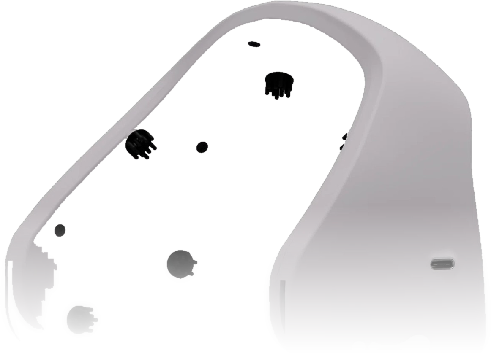

Put it on
Eight dry contacts sit on standard EEG positions. No gel, no paste, no technician.
The desktop app for the BROADMIND Research Kit. It walks you through fitting the eight-channel dry EEG headset, waits for the contacts to settle, then records every sample at full rate.
v0.2.2 beta · Free during the beta · macOS 11 or later · Apple silicon and Intel

A 26-second walkthrough of v0.2.2 beta: the guided setup, step by step, through to Start Session.
The app shows you the same sequence on screen during setup. No manual, no technician, no guesswork.
Eight dry contacts sit on standard EEG positions. No gel, no paste, no technician.
One USB-C cable to your recording machine. The kit runs on battery, so nothing mains-powered sits in the recording path.
Time series, FFT and band power appear together in one window. Export to CSV, EDF or JSON.
All eight channels, live, as raw data. Nothing is decimated on the way to disk.
The spectrum, updating as you record.
Delta to gamma at a glance.
Export every session to CSV, EDF or JSON and take it straight into your own pipeline, alongside the open SDK.
The public macOS build is live as a Homebrew cask. Paste the commands into a terminal, or hand them to your AI agent. Either way it is the same clean install.
Install BROADMIND GUI on this Mac. Run brew tap broadmind-bci/broadmind-gui, then brew install --cask broadmind-gui, and open it from /Applications.
Paste this into any coding agent with terminal access.